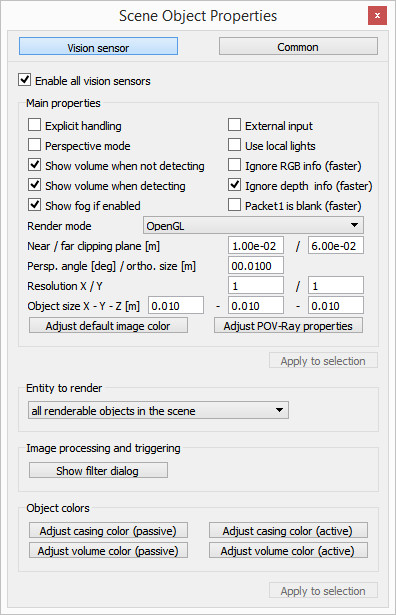

Assignments 1 <<
Previous Next >> 亂數分組
四輪車手冊
從 http://www.coppeliarobotics.com/helpFiles/index.html 裡挑了五個有關四輪車的章節來翻譯了解。
章節:Line following BubbleRob tutorial
在CoppeliaSim的安裝文件夾中的tutorials / BubbleRob中加載第一個BubbleRob教程的場景。

我們首先創建3個視覺傳感器中的第一個，並將其附加到bubbleRob對象。選擇[菜單欄->添加->視覺傳感器->正交類型]。通過雙擊場景層次中新創建的視覺傳感器圖標來編輯其屬性，並更改參數以反映。

視覺傳感器必鬚麵向地面，因此選擇它，然後在“方向”對話框中的“方向”選項卡上，將“ Alpha-Beta-Gamma”項設置為[180; 0; 0]。
我們有幾種可能性可以讀取視覺傳感器。由於我們的視覺傳感器只有一個像素，並且操作簡單，因此我們只需查詢視覺傳感器讀取的圖像的平均強度值即可。對於更複雜的情況，我們可以設置視覺回調函數。現在，複製並粘貼視覺傳感器兩次，並將其名稱調整為leftSensor，middleSensor和rightSensor。
讓我們正確放置傳感器。為此，使用位置對話框，在位置選項卡上，並設置以下絕對坐標：
- 左傳感器：[0.2; 0.042; 0.018]
- 中間傳感器：[0.2; 0; 0.018]
- 右傳感器：[0.2; -0.042; 0.018]
現在讓我們修改環境。我們可以移去BubbleRob前面的幾個圓柱體。接下來，我們將構建機器人將嘗試遵循的路徑。從現在開始最好切換到頂視圖：通過頁面選擇器工具欄按鈕選擇頁面4。然後單擊[菜單欄->添加->路徑->圓圈類型]。使用鼠標啟用對象移動。
選擇路徑（並且只有路徑）後，按住Ctrl並單擊其控制點之一。然後可以將它們拖動到正確的位置。
選擇路徑後，進入路徑編輯模式。在那裡，您可以靈活地調整各個路徑控制點。
一旦對路徑的幾何形狀滿意（您隨時可以在以後的階段對其進行修改），請選擇它，然後在路徑屬性中取消選中“顯示點的方向”，“顯示路徑線”和“顯示路徑上的當前位置”。然後單擊顯示路徑整形對話框。這將打開路徑整形對話框。單擊啟用路徑整形，將類型設置為水平線段，並將縮放因子設置為4.0。最後將顏色調整為黑色。我們必須對路徑進行最後一個重要的調整：當前，路徑的z位置與地板的z位置重合。結果是有時我們會看到路徑，有時會看到地板（這種效果在openGl行話中被稱為“ z-fighting”）。這不僅影響我們所看到的，而且還會影響視覺傳感器所看到的。為了避免與z戰鬥有關的問題，只需將路徑對象的位置向上移動0.5毫米即可。
最後一步是調整BubbleRob的控制器，使其也將遵循黑色路徑。
章節:External controller tutorial
在CoppeliaSim中，有幾種方法可以控制機器人或仿真:
- 方法一是編寫一個腳本來處理給定機器人或模型的行為。這是最方便的方法，因為子腳本直接附加到場景對象，它們將與相關的場景對像一起復制，它們不需要使用外部工具進行任何編譯，它們可以在線程或非線程模式下運行，它們可以通過自定義Lua函數或Lua擴展庫進行擴展。使用子腳本的另一個主要優點是：與本節中提到的後3種方法（即使用常規API）一樣，沒有通信延遲，並且子腳本是應用程序主線程的一部分（固有的同步操作）。
- 方法二是編寫插件。插件機制允許使用回調機制，自定義Lua函數註冊，當然還可以訪問外部函數庫。插件通常與子腳本結合使用（例如，插件註冊自定義的Lua函數，當從子腳本中調用時，該Lua函數將回調特定的插件函數）。使用插件的主要優勢還在於，與本節中提到的後3種方法（即使用常規API）一樣，沒有通信延遲，並且插件是應用程序主線程的一部分（固有的同步操作）。插件的缺點是：它們的編程更加複雜，並且也需要使用外部編譯。
- 方法三是編寫依賴於遠程API的外部客戶端應用程序。如果您需要從外部應用程序，機器人或另一台計算機運行控制代碼，這是一種非常便捷的方法。這也使您可以使用與運行真實機器人完全相同的代碼來控制仿真或模型（例如虛擬機器人）。
- 方法四是通過ROS節點。 ROS與遠程API相似，是使多個分佈式進程相互通信的便捷方法。儘管遠程API非常輕巧且快速，但它僅允許與CoppeliaSim通信。另一方面，ROS允許幾乎將任意數量的進程相互連接，並且提供了大量兼容的庫。但是，它比遠程API重並且更複雜。
- 方法五是通過BlueZero（BØ）節點。與ROS類似，BlueZero是使多個分佈式進程相互通信的一種便捷方法，並且是一種輕量級的跨平台解決方案。
- 方法六是編寫一個外部應用程序，該應用程序通過各種方式（例如管道，套接字，串行端口等）與CoppeliaSim插件或CoppeliaSim腳本進行通信。選擇編程語言（可以是任何一種語言）和靈活性是兩個主要優點。同樣，控制代碼也可以在機器人或其他計算機上運行。

章節:Simulation dialog
可以通過[菜單欄->模擬->模擬設置]或點擊以下工具欄按鈕來訪問模擬對話框
- 時間：模擬時間。每次執行主腳本時，仿真時間都會增加仿真時間步長。使用較大的時間步會導致快速但不准確/不穩定的仿真。另一方面，較小的時間步長（通常）會導致更精確的仿真，但是會花費更多時間。強烈建議保留默認時間步長。
- 每幀模擬遍數：一個渲染遍的模擬遍數。值為10表示刷新屏幕之前，主腳本已執行10次。如果您的圖形卡較慢，則可以選擇僅顯示兩幅中的一幅。
- 當仿真時間高於以下時間時暫停：允許指定暫停仿真的仿真時間。
- 腳本錯誤暫停：如果啟用，則在腳本錯誤發生時暫停仿真。
- 模擬開始時全屏：如果啟用，則模擬以全屏模式開始。請注意，在全屏模式下，對話框和消息將不會出現或不可見，只有鼠標左鍵處於活動狀態。因此，僅在正確配置場景並最終確定場景後才建議使用該模式。可以使用esc鍵保留全屏模式，並在仿真過程中通過布爾參數sim_booparam_fullscreen進行切換。 Unler Linux和MacOS可能僅部分支持全屏模式，並且在某些系統上切換回普通模式可能會失敗。
- 實時仿真，倍增係數：如果選擇，則仿真時間將嘗試跟隨實時。 X的乘數將使仿真運行比實時快X倍。
- 在落後時嘗試趕上：在實時仿真過程中，仿真時間可能無法實時跟踪（例如，由於某些瞬間繁重的計算）。在這種情況下，如果選中此復選框，則模擬時間將嘗試趕上損失的時間，從而明顯加快速度。
- 將場景重置為初始狀態：選中後，所有對像都將重置為其初始狀態：包括對象的局部位置，局部方向及其父對象（只要未進行其他修改（例如，縮放），以及路徑的固有位置，浮動視圖的位置和大小等。這意味著除非進行了重大更改（形狀縮放，對象移除等），否則下一次模擬運行將以與上一次相同的方式執行。
- 刪除新對象：選中後，在仿真運行期間添加的場景對象將在仿真結束時被刪除。
章節:Simulation
模擬
使用[菜單欄->模擬->開始/暫停/停止模擬]或通過相關的工具欄按鈕來啟動，暫停和停止CoppeliaSim中的模擬：

在內部，模擬器將使用其他中間狀態，以正確告知腳本或程序接下來將發生的情況。
腳本和程序應始終根據當前系統調用功能以及可能的模擬狀態進行反應，以便正確運行。優良作法是將每個控制代碼至少分為4個系統調用函數
- 初始化函數：僅在腳本初始化時調用該函數
- 激活函數：應在發生激活時調用該函數。
- 傳感功能：應在傳感發生時調用此函數。
- 清理函數：該函數在腳本未初始化之前被調用。
仿真循環
模擬器通過以恆定的時間步長推進模擬時間來進行操作。
通過嘗試使仿真時間與實時保持同步來支持實時仿真:
以下是一個非常簡化的主客戶端應用程序:

取決於模擬的複雜性，計算機的性能和模擬設置，實時模擬可能並不總是可能的。
仿真速度
在非實時仿真中，仿真速度主要取決於兩個因素，仿真時間長和一個渲染通道的仿真通道數量。在實時仿真的情況下，仿真速度主要取決於實時乘法係數，而且在一定程度上取決於仿真時間步長。由於計算機的計算能力有限，因此無法進行仿真。在模擬過程中，可以使用以下工具欄按鈕來調整模擬速度：
以某種方式調整模擬速度，以使初始模擬時間步長永遠不會增加。以下兩個圖說明了仿真速度調整機制：
默認情況下，每個模擬週期由以下順序操作組成：
螺紋渲染
渲染操作將始終增加仿真週期的持續時間，從而也降低了仿真速度。可以定義每個場景渲染的主腳本執行次數，但這在某些情況下還不夠，因為渲染仍然會減慢每個第x個模擬週期的時間。在這種情況下，可以通過用戶設置或以下工具欄按鈕激活線程渲染模式：
激活線程渲染模式後，模擬週期將僅包含在執行主腳本中，因此模擬將以最大速度運行。渲染將通過不同的線程進行，並且不會減慢模擬任務的速度。然而，必須考慮缺點。
- 渲染將與模擬循環異步進行，並且可能會出現視覺故障。
- 錄像機將無法以恆定速度運行。
- 應用程序的穩定性可能會降低。
- 某些操作需要等待渲染線程完成工作才能執行，反之亦然。在那些情況下，循環可能比順序渲染模式花費更多的時間。
Assignments 1 <<
Previous Next >> 亂數分組